The current inflationary environment has made rising input costs a major concern.
75%
of farmers expect cost hikes in the next 12–18 months
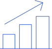
~60%
of farmers expect the current inflationary environment to
increase spending by
10–20% in the next 12–18 months
Top three inputs that have increased in cost the most,
% cost increase experienced
71%
fertilizer
30%
17%
crop protection
labor
Despite the tailwinds driven by higher commodity prices, external macro trends are increasing uncertainty in profitability.
A.
Q: What do you believe are the top three opportunities to your profits over the next 2 years? Rank top 3 (n = 1,354)
Top opportunities
B.
Q: What do you believe are the top three risks to your profits over the next 2 years? Rank top 3 (n = 1,354)
Top risks
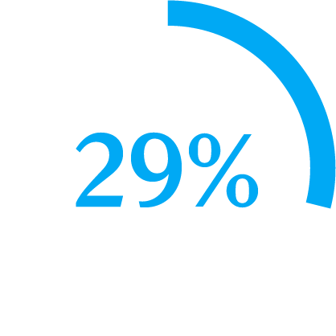
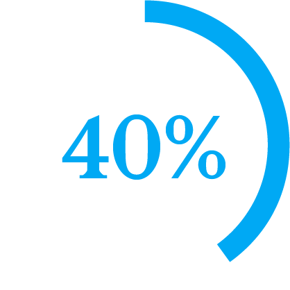
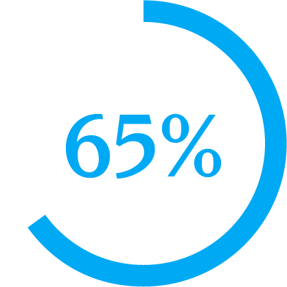
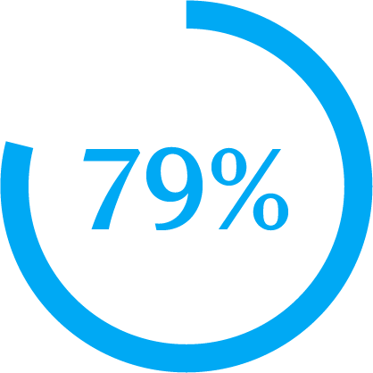
Improved crop prices
Improved yields
Favorable demand from other countries
Increased price of inputs
Increased overhead and processing costs¹
Supply chain disruptions and unavailable inputs
Includes labor, transportation, and energy costs.
Source: McKinsey US Farmer Insights 2022–23 (n = 1,354)
¹
Farmers are uncertain about business outcomes in the next two years. Sixty percent believe their profitability will remain stable or increase.
Future profit outlook,
% of respondents (n = 1,354)¹
Future profit outlook by farm size,
% of respondents

Q: How do you expect your profits to change in the next 2 years?
(< 2,000 acres) n = 1,109
Small farms
(2,000–5,000 acres)
n = 157
Medium farms
(> 5,000 acres) n = 88
Large farms
I believe profits will be slightly or much higher
I believe profits will remain stable
I believe profits will be slightly or much lower
28
31
42
43
31
26
35
30
35
26
31
43

Figures may not sum to 100%, because of rounding.
Source: McKinsey US Farmer Insights 2022–23 (n = 1,354)
¹
Fifty percent of farmers question the ROI of carbon programs, and nearly 50 percent of farmers have not been offered a carbon program.
Top three reasons given for not participating in a carbon program,
% of respondents who ranked factor among their top three
50%
49%
39%
ROI not high enough for me
Not offered to me
I do not understand the program
Source: McKinsey US Farmer Insights 2022–23 (n = 1,354)
Adoption rates of biological products are expected to grow in the next two years across all farm sizes.
Adoption of bioproducts by farm size,
% of respondents
Q: Are you using biobased products in your fertilizer protocol? (n = 1,354)
(< 2,000 acres) n = 1,109
Small farms
(2,000–5,000 acres)
n = 157
Medium farms
(> 5,000 acres) n = 88
Large farms
Biostimulants
Biofertilizers
Biocontrol
Currently using them
Not using now but planning to use in the next 2 years
6
4
6
5
12
8
14
19
5
26
5
11
7
13
8
21
6
7
Takeaways from the survey include the following:
Growers are unsure about business outcomes. Rising crop prices and yields offer them reasons for optimism, but they expect headwinds from higher costs on inputs and overhead.
Growers are managing volatility and uncertainty
by embracing new products and technologies: about 50 percent of growers expect
to use new yield-improvement products.
Growers are looking to engage with suppliers differently to find solutions that
meet performance and price needs.
An omnichannel approach is preferred.
Grower acceptance of agtech has continued to rise
in the past 2 years. Nonetheless, challenges to scaling remain
as a result of unclear ROI and poor experiences for growers.
Click on each category to learn more
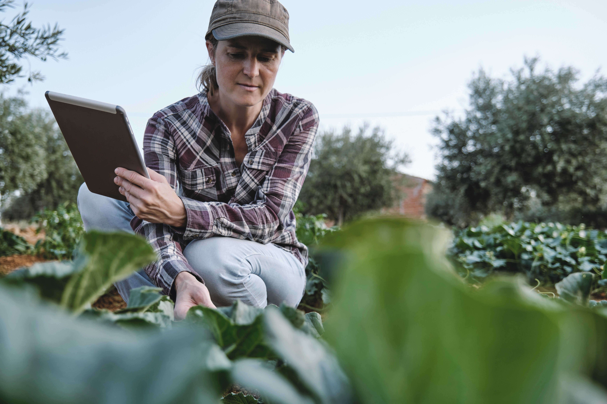
Voice of the US farmer in 2022:
Innovating through uncertainty
Supply chain disruption, geopolitical uncertainty, and climate change are contributing to above-average price volatility and inflation. To find out how farmers are addressing these challenges, McKinsey surveyed more than 1,300 US row and specialty-crop farmers in May 2022. Their responses reveal that farmers are regarding the future with wary optimism and that it is more important than ever for farmers to capture the most from every acre.
Growers remain interested in sustainable practices but adoption of more holistic approaches beyond no-till and cover cropping is limited, particularly if risk or capital demands are
too high.
Managing macro uncertainty
Willingness to innovate
Evolving engagement with suppliers
Agtech momentum with scaling challenges
White space in adoption of sustainable practices
Back to top
Small farms are categorized as less than 2,000 acres; medium-size farms as 2,000 to 5,000 acres; and large farms as more than 5,000 acres.
Source: McKinsey US Farmer Insights 2022–23 (n = 222)
¹
Larger farms are currently taking more actions to mitigate volatility than small farms.
Changes in farm management driven by volatility of inputs and grain pricing,
% of respondents (n = 222)
Q: How does the volatility in grain pricing and inputs change how you manage your farm? Select all that apply.
By farm size¹
Small
Medium
Large
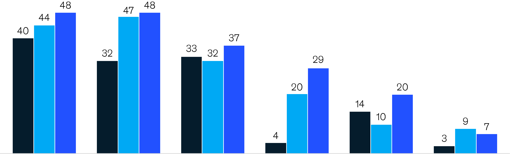
Growers, especially larger farms, are changing purchasing and selling patterns
Buy inputs earlier
Sell forward more crops
Look for lower prices more aggressively
Engage in crop trading or other financial hedging
Switch crops
Invest in technology to better inform my spending decisions
Large farms are much more likely to reach for financial hedging
Question only asked of farmers who identified as purchasing farm equipment.
Source: McKinsey US Farmer Insights 2022–23 (n = 1,315)
¹
(< 2,000 acres) n = 1,074
Small farms
(2,000–5,000 acres)
n = 153
Medium farms
(> 5,000 acres) n = 88
Large farms
More brand loyal
No change
Less brand loyal
About 30 percent of operators of larger farms have become less brand loyal in the past five years.
Q: How has your primary farm equipment brand preference changed in the past 5 years? (n = 1,315)¹
Farmer equipment brand loyalty,
% of respondents
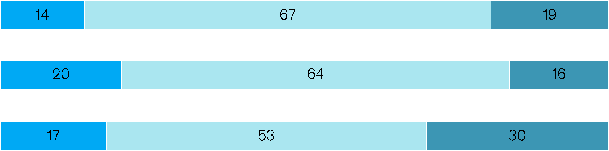
Fifty percent of farmers are willing to try new yield-increasing products.
Actions to capture the profit opportunity,
% of respondents (n = 1,354)
(< 2,000 acres) n = 1,109
Small farms
(2,000–5,000 acres)
n = 157
Medium farms
(> 5,000 acres) n = 88
Large farms
Source: McKinsey US Farmer Insights 2022–23 (n = 1,354)
Q: What actions do you anticipate taking to profit the most from those opportunities? [Asked after: What do you believe are the top three opportunities to your profits over the next 2 years?]
Percent of group who selected this action:
0–24
50–55
25–49

Overall respondents
All
Try new yield-increasing products
Try new crop protection products
Adopt new farming practices (regenerative agriculture)
Change purchasing and vendor strategy
Purchase innovative equipment, products, or technology
Buy or lease more land
Use technology to enhance commodity-trading capabilities
49%
36%
26%
22%
24%
21%
19%
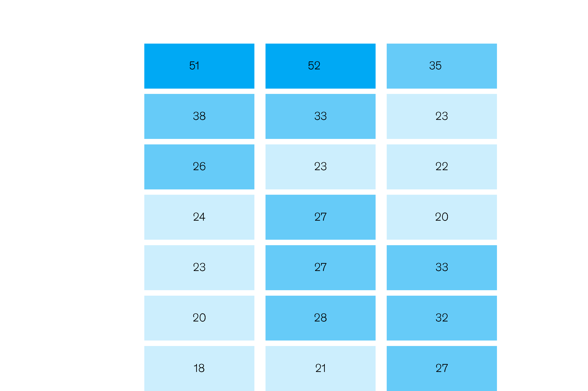
(< 2,000 acres) n = 1,109
Small farms
(2,000–5,000 acres)
n = 157
Medium farms
(> 5,000 acres) n = 88
Large farms
Source: McKinsey US Farmer Insights 2022–23 (n = 1,354)
While many farmers are aware of sustainable farming practices, holistic adoption across practices is less than 50 percent.
Large farms are leading in practice adoption vs smaller farms
Q: What is your level of adoption of the following sustainable farming practices and energy- and water-efficient operations? (n = 1,354)
Currently implementing this practice
Not using now but planning to use it in the next 2 years
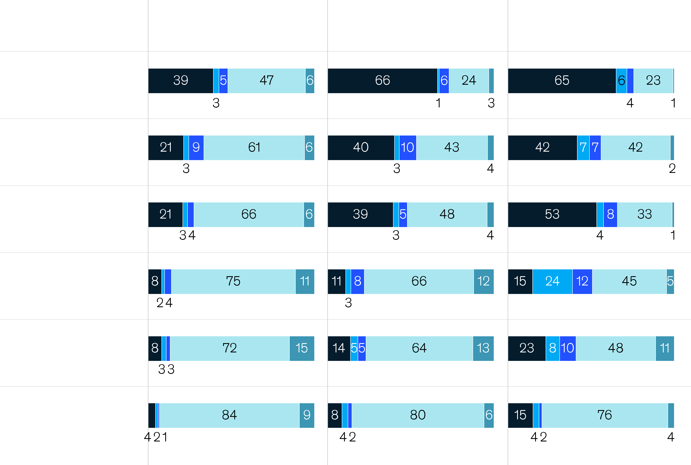
(< 2,000 acres) n = 1,109
Farm management software
Remote-sensing technologies
Precision agriculture hardware
Agribusiness marketplaces
Sustainability-related tools
Automation, robotics, and electric equipment
Small farms
(2,000–5,000 acres)
n = 157
Medium farms
(> 5,000 acres) n = 88
Large farms
Figures may not sum to 100%, because of rounding.
Source: McKinsey US Farmer Insights 2022–23 (n = 1,354)
¹
There are higher rates of trend adoption among large and medium-size farms, with small farms lagging.
Current adoption of trends by farm size,
% of respondents¹
Currently using it
Not using now but planning to use it in the next 2 years
Q: What is your level of adoption on the following trends? (n = 1,354)
Used it before but stopped
Know about it but never use it
Never heard of it and never used it
Farmer adoption by farm size,
% of respondents
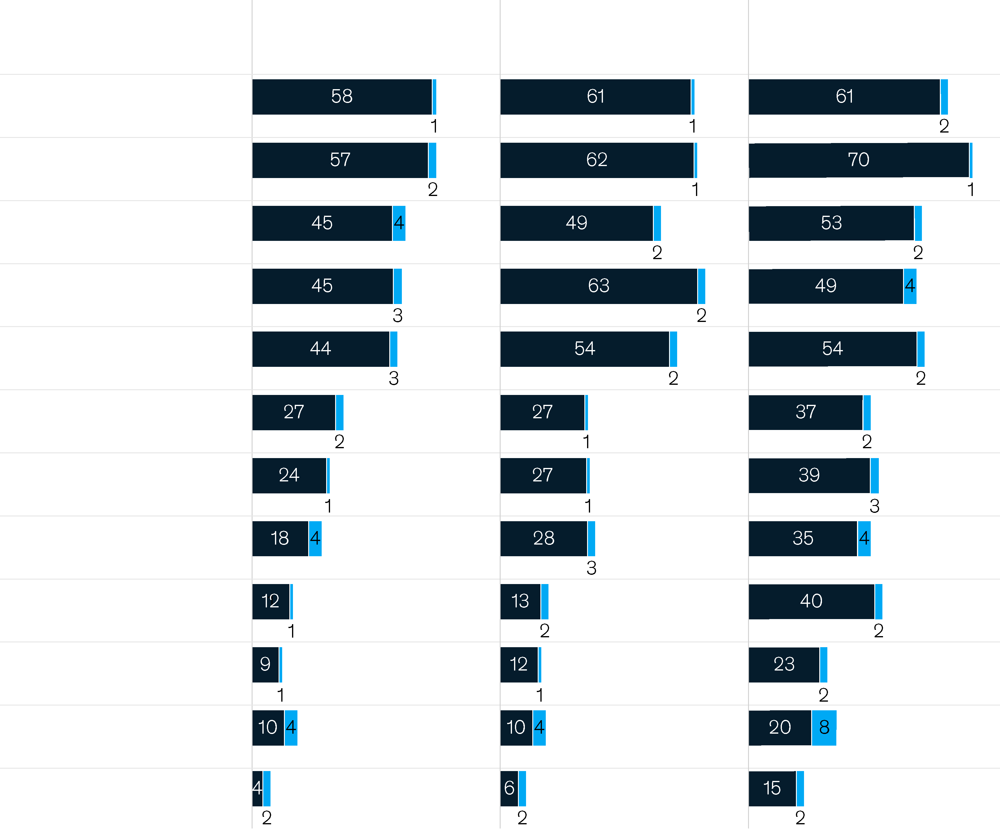
No till
Low till
Cover crops
Variable-rate fertilizer
Controlled-release and stabilized fertilizer
Riparian buffers
Stormwater management
Biocontrols
Controlled irrigation
Trees on cropland
On-farm renewable energy
Equipment electrification
Improve yield
Save on fertilizer cost
Reduce nitrogen or other nutrient applications
~40–50%
78
71
21
Source: McKinsey US Farmer Insights Survey, 2022–23 (n = 1,354)
Decisions to adopt biologicals are driven by yield, cost savings, and efficacy of the product.
Reasons for adoption of biostimulants and biofertilizers,
% of respondents (n = 781)
Reasons for adoption of biocontrols,
% of respondents (n = 671)
Q: What reasons would make you consider including biostimulants or biofertilizers into your fertilizer or crop protection protocol in the future? Rank top 2
Q: What reasons would make you consider including alternative forms of crop protection into your pest management protocol (eg, biocontrol solutions) in the future? Rank top 2
Lower cost per acre
Better overall efficacy
Better ROI than alternative products
of farmers know about bioproducts but choose not to use them.
50
43
41